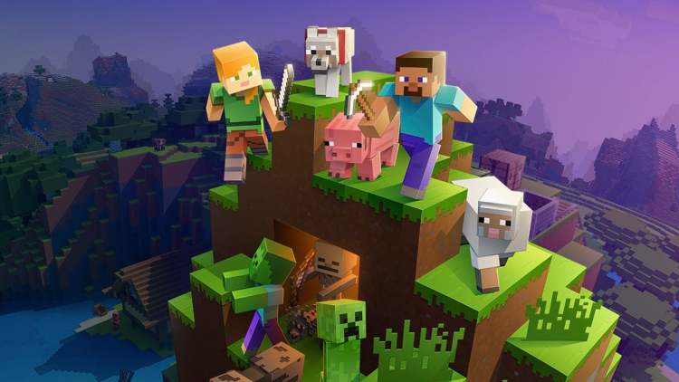
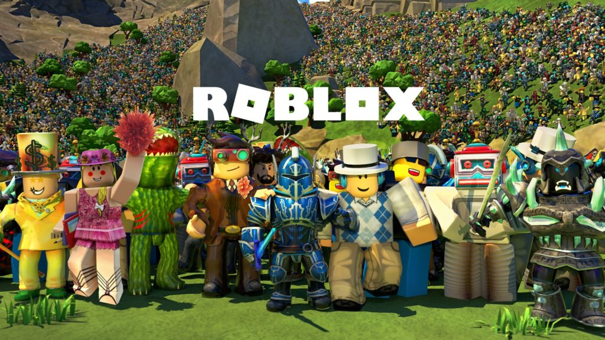
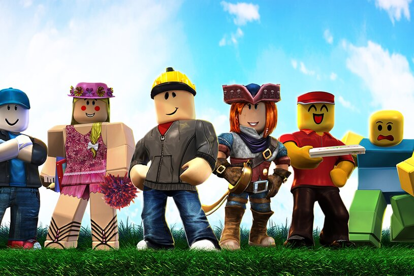
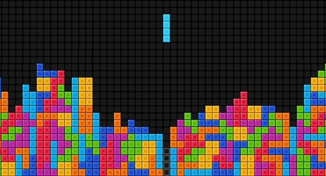
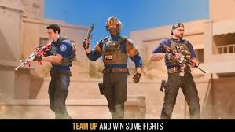

1.Minecraft

Minecraft (від англ. mine craft — досл. «шахтарське ремесло») — незалежна відеогра (інді-гра) студії Mojang 2011 року жанру «пісочниця» у відкритому світі з виглядом від першої/третьої особи. Гра започаткувала однойменну серію, для всіх творів якої характерний мінімалістичний кубічний дизайн.
Ця гра передусім дає змогу виразити свою креативність. Розроблена шведським програмістом Маркусом Перссоном, відомим також як «Notch», і надалі випускається заснованою Маркусом Перссоном компанією Mojang, котра належить Microsoft Studios. Minecraft належить до ігор з найширшою аудиторією і є найпродаванішою відеогрою в історії.
відео з гри->
фото з гри
2.roblox
Roblox (дата анонсування 1997, дата випуску 2006, також відомий, як DynaBlocks) — світова online-платформа для створення ігор. Користувачі Roblox (зокрема діти, підлітки) можуть створювати свої ігри за допомогою Roblox Studio (див. нижче), грати в ігри, створені іншими користувачами, а також створювати, одягати свого Roblox-персонажа (деякі товари в Roblox -каталог можна купити за ігрову валюту — Robux).
Будь-який користувач може завантажити Roblox Studio на свій комп'ютер і створювати місця (англ. Places). Плейси можна буде опублікувати на свій профіль в Roblox. Також творці можуть використовувати ігрову валюту в своїх міні-іграх — Robux (див. Ігрова валюта). За них можна купувати товари або послуги в грі.
відео з гри->
фото з гри
3.tetris
Тетріс — відеогра-головоломка, розроблена Олексієм Пажитновим та його колегами. Перша версія гри була представлена 6 червня 1984 року, коли він працював в ОЦ Академії наук СРСР в Москві. Назву гри автор створив поєднавши грецький префікс «тетра-» зі словом «теніс» — улюбленою грою Пажитнова.
Ця гра в тому чи іншому вигляді існує майже для кожної ігрової консолі та операційної системи, а також для інших електронних пристроїв: мобільних телефонів, портативних медіаплеєрів, кишенькових комп'ютерів тощо.
відео з гри->
фото з гри

3.standof 2
Standoff 2 представляет собой классический шутер от первого лица с различными режимами игры и арсеналом разного оружия. Каждое оружие обладает различным набором характеристик, ограничивающих тактические возможности игрока: пробиваемость брони, отдача, темп стрельбы, цена, награда за убийство, боезапас
отличие от большинства мобильных шутеров, в Standoff 2 отсутствует автострельба и помощь в наведении, но в то же время есть и гибкая настройка управления: возможность перемещать, изменять видимость и размеры большей части элементов интерфейса. За реальные деньги в игре продаются только декоративные предметы, не влияющие на игровой процесс